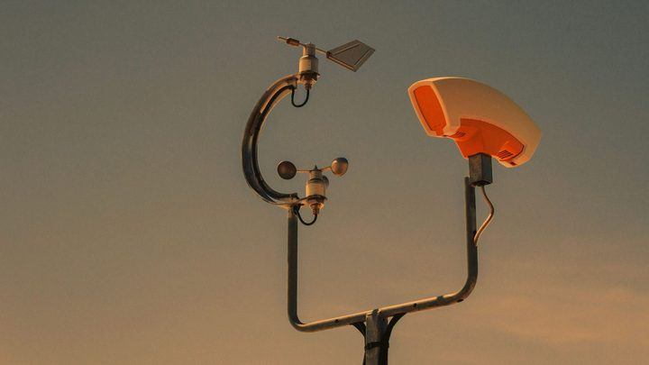
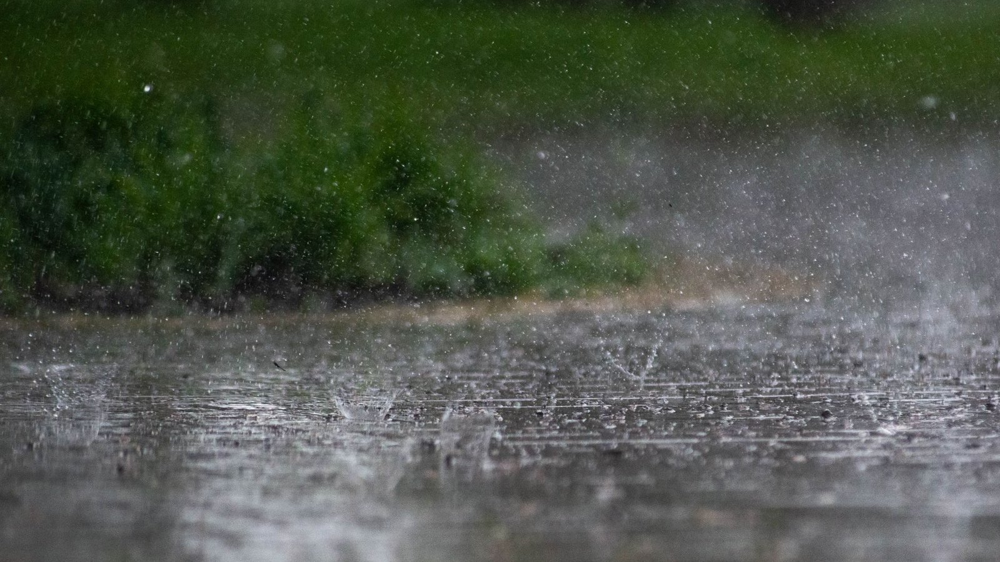

Itapema · Defesa CivilItapema ganha duas estações que medem chuva e vento, e a Defesa Civil comprou outras duas com recurso próprio
Onde ficam as quatro estações da cidade.
A Defesa Civil de Santa Catarina divulgou nesta quinta, 10, a atualização do órgão meteorológico dos Estados Unidos: são 95% de chance de El Niño muito forte entre setembro e dezembro, e 75% de chance de ele ser o mais intenso desde 1950. Aqui na região, quem vai medir a chuva de perto é a rede de 38 estações da AMFRI, que tem prazo de conclusão até o fim deste mês. Em 4 de setembro, 20 pontos estavam instalados em 9 dos 11 municípios.
Em 30 segundos · Modo de Leitura, formato original Santa Informa
O El Niño esquenta o Pacífico e muda a chuva aqui.
A previsão nova é da NOAA, dos Estados Unidos.
A Defesa Civil de SC divulgou em 10 de setembro.
São 95% de chance de ele ser muito forte.
Isso vale para setembro a dezembro.
E 75% de chance de ser o maior desde 1950.
Em agosto o Pacífico estava 1,8 °C acima.
O que se espera: mais chuva e mais temporal.
Também inundação, deslizamento e vendaval.
Mas o Estado faz uma ressalva.
Evento grande depende de outros fatores juntos.
Aqui a região está montando uma rede de medição.
São 38 estações nos 11 municípios da AMFRI.
Em 4 de setembro havia 20 instaladas.
O prazo é até o fim de setembro.
Itapema tem duas da rede e duas próprias.
Elas medem chuva, vento, temperatura e umidade.
Para receber aviso, mande o CEP para o 40199.
Em emergência, o telefone é o 199.
Santa CatarinaPublicada em Redação Santa Informa

A Defesa Civil de Santa Catarina divulgou nesta quinta-feira, 10 de setembro, a atualização da NOAA, a agência de oceanos e atmosfera dos Estados Unidos. A chance de o El Niño chegar em intensidade muito forte entre setembro e dezembro subiu para 95%. E existe 75% de chance de ele entrar para a série como o mais intenso já medido desde 1950. Em agosto, a região do Pacífico que serve de termômetro para o fenômeno, chamada Niño 3.4, estava 1,8 °C acima da média.
Segundo a Defesa Civil do Estado, um El Niño dessa intensidade tende a aumentar a frequência de chuva, temporal, inundação, deslizamento e vendaval na primavera e no verão. O próprio Estado faz a ressalva, na voz do gerente de monitoramento e alerta, Frederico de Moraes Rudorff: um El Niño muito forte tende, de fato, a aumentar a frequência das chuvas, mas a ocorrência de grandes eventos depende da combinação com outros fatores climáticos. Ou seja, probabilidade alta não é o mesmo que enchente marcada na agenda.
É aqui que a conta local entra. Os 11 municípios da AMFRI, Itapema incluída, estão montando uma rede própria de 38 estações meteorológicas. Em 4 de setembro, a Prefeitura de Navegantes informou que 20 pontos já estavam instalados, em 9 municípios, e que o prazo para fechar os 38 é o fim de setembro. Os aparelhos funcionam com energia solar e sinal de internet próprio, medem chuva, temperatura, umidade e velocidade e direção do vento, e mandam o dado em tempo real para o Sistema de Monitoramento e Alerta do Estado.
A cidade recebeu duas estações da rede regional em 4 de setembro, uma na antiga base da Defesa Civil, no Tabuleiro, e outra na EMEB Vereador Paulo Reis, no Sertão do Trombudo. A Defesa Civil municipal comprou outras duas com recurso próprio. Ou seja, o prazo da rede e a chegada do fenômeno caem quase no mesmo mês: a primavera começa em setembro, e é a partir dela que a conta de 95% passa a valer. Em agosto, quando a campanha regional contra o El Niño foi lançada, a rede ainda era promessa.
São quatro canais gratuitos do Estado. Por SMS, mande o CEP para o 40199. Por WhatsApp, mande o CEP para (61) 2034-4611. O Defesa Civil Alerta dispara mensagem crítica direto no celular de quem está na área de risco, sem cadastro nenhum. E em emergência o telefone é o 199. A recomendação do Estado para os próximos meses é simples: acompanhar a previsão todo dia, porque com El Niño forte a chuva muda de figura mais vezes ao longo da semana.
O resumo de 30 segundos está no topo e a versão completa é o texto acima. Aqui ficam as três leituras da casa sobre o mesmo assunto.
Clara, a otimista
Chegou aviso com meses de antecedência, e não com três dias. Isso muda tudo para quem tem calha entupida, muro de arrimo velho ou telha solta: dá tempo de resolver antes da primeira chuva grande, no seco e sem fila de pedreiro.
E a região está chegando na primavera medindo o próprio tempo. Eram zero estações locais em julho, são 20 agora e a promessa é de 38 até o fim do mês. Dado colhido aqui dentro é o que faz alerta chegar cedo, e alerta cedo é o que salva.
Seu Prudêncio, o criterioso
Merece atenção a diferença entre probabilidade e previsão. Noventa e cinco por cento é a chance de o fenômeno ficar muito forte, e não a chance de alagar a sua rua. O próprio Estado avisa que evento grande depende de outros fatores climáticos se somarem. Quem lê rápido troca uma coisa pela outra e sai daí ou pânico ou descaso, e os dois atrapalham.
O prazo da rede também pede olho. Fim de setembro é daqui a pouco, faltam 18 pontos e ninguém publicou a lista do que já está instalado nem quais dois municípios ainda estão sem nada. Vale acompanhar, porque estação que não fica pronta antes do verão perde justamente a temporada que precisava medir.
Uma sugestão útil: a AMFRI publicar um mapa aberto com os pontos e o dado em tempo real. Já existe estrutura, já existe integração com o Estado, e o custo de mostrar isso ao público é quase zero. Dito isso, a decisão de montar a rede foi acertada e veio na hora certa. Comprar sensor antes da chuva é o tipo de gasto público que quase nunca acontece, e desta vez aconteceu.
Caco, o sarcástico
O Pacífico está 1,8 grau mais quente e o problema vira nosso, do outro lado do mundo. Fenômeno global é assim: começa longe, na água de ninguém, e termina na sua garagem.
Setenta e cinco por cento de chance de ser o maior desde 1950. O El Niño está claramente tentando bater recorde, e ninguém pediu isso a ele.
Reclamar mesmo, só do timing. A rede de estações fica pronta no fim de setembro e o fenômeno estreia justamente na primavera. É apertado, mas conto como vitória: desta vez o termômetro chegou antes da febre, e não depois.
Fontes: os 95% de chance de El Niño muito forte entre setembro e dezembro, os 75% de chance de ele ser o mais intenso desde 1950, a anomalia de 1,8 °C na região Niño 3.4 em agosto, a autoria da NOAA, os efeitos esperados em Santa Catarina na primavera e no verão, a fala do gerente de monitoramento e alerta Frederico de Moraes Rudorff, a explicação do meteorologista Caio Guerra e os canais de alerta por SMS, WhatsApp, Cell Broadcast e 199 estão na publicação da Defesa Civil de Santa Catarina, no portal de notícias do Governo do Estado, de 10 de setembro de 2026. Os 38 pontos da rede regional nos 11 municípios da AMFRI, os 20 já instalados em 9 municípios, o prazo até o fim de setembro, o funcionamento por energia solar, o que os aparelhos medem e a integração ao Sistema de Monitoramento e Alerta do Estado estão no aviso oficial da Prefeitura de Navegantes, de 4 de setembro de 2026, que lemos por inteiro. Os endereços das duas estações de Itapema e as outras duas compradas pela Defesa Civil municipal estão na nossa matéria de 7 de setembro, e o lançamento da campanha regional está na nossa matéria de 30 de agosto. O cruzamento entre o prazo da rede e a chegada do fenômeno foi feito por nós. A foto do Governo do Estado que acompanha a publicação oficial não foi usada aqui: o portal do Governo de SC reserva os direitos das próprias imagens.

Itapema · Defesa CivilOnde ficam as quatro estações da cidade.
 Itapema · Meio Ambiente
Itapema · Meio AmbienteQuando a rede regional ainda era promessa, em agosto.
 Santa Catarina · Clima
Santa Catarina · ClimaO estrago que um temporal de agosto já fez no Estado.